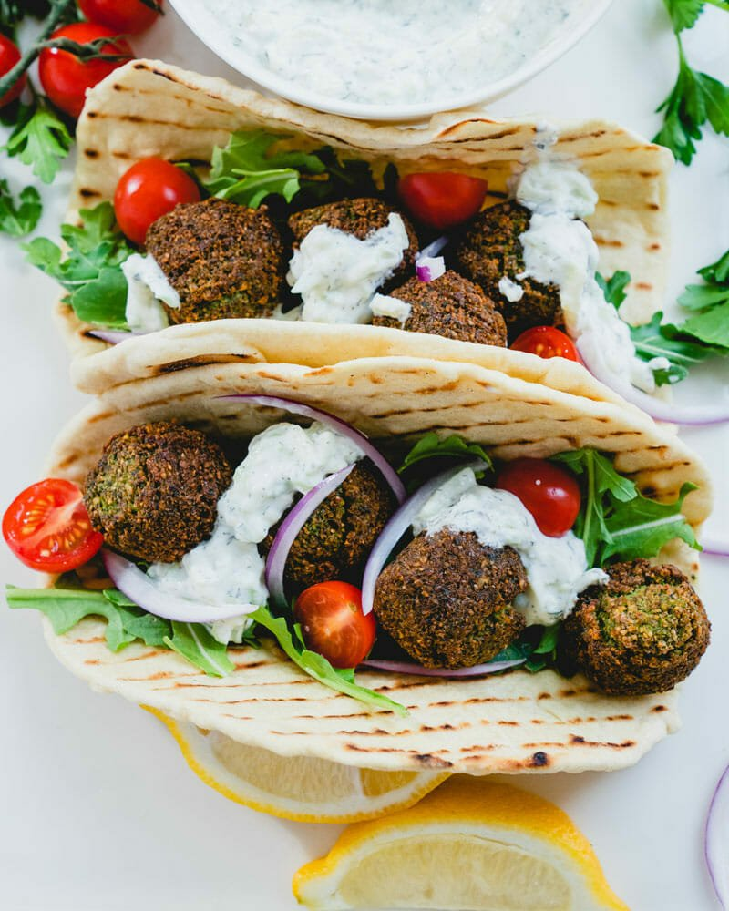

Falafel Pita Wrap

Description:
One of my favorite quick and easy lunch time treats is the beloved Middle Eastern food the Falafel Wrap.
This delicious wrap, is a warm pita bread stuffed with crispy hot falafel balls, surrounded by cool and crunchy diced tomatoes, cucumbers, and onions, then drenched with a nutty tahini sauce.
Ingredients:
- 1 tablespoon Olive Oil
- 6 pieces pita
- 18 pieces of falafel (frozen or fresh)
- 2 medium tomatoes
- 1 medium cucumber, unpeeled and diced
- 1 medium white or red onion, thinly sliced
- 1/4 cup finely chopped fresh parsley
- Tahini sauce (store bought or fresh)
Steps:
- Cut a small opening in your pita, then heat a large nonstick skillet or griddle to medium-high heat, coat with olive oil and heat a pita round for 2 minutes on each side, the pita may begin to brown a little.
- Stuff each pita round with 3 falafel balls and a spoonful each of diced tomatoes and cucumber.
- Top each with sliced onion, chopped parsley, the optional pickles, and a generous drizzle of tahini sauce.